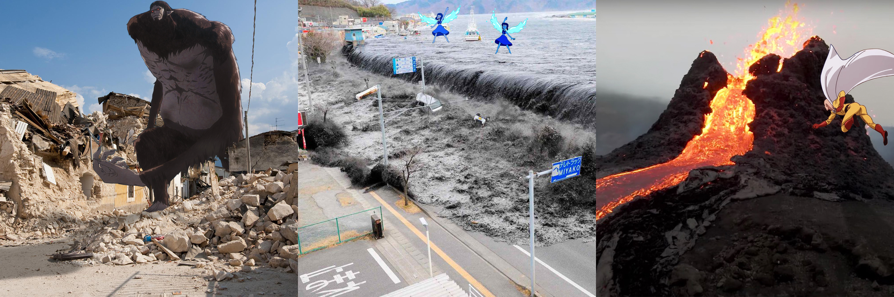

Projects
Foreword
Yun Dongju's poem "Foreword" is his promise to be a good man while he is alive, since he loves his people and all things that are alive. As such, I chose a cozy color palette to make a heartwarming mood to the animation. The man under the tree at the opening scene represents Yun Dongju, as he states his manifesto. The drawings were made in Adobe Illustrator and animated entirely in After Effects; the video was put together and finalized in Premiere Pro.
Unnatural Disasters

I combined pictures of natural disasters in the real world with character from some of my favorite animations, such that the characters had caused destruction to our world. I tried to make the animated characters look more natural by choosing places and character designs with similar color palettes and adding shadows where I though were appropriate. The collection is under the guise of the saying "pics or it didn't happen", in which Adobe Photoshop was used to make them happen.
Logo For Humanity
This is a short black and white based on humanity (as a first impression to aliens). I wanted to show humanity as "togetherness" so I knew I wanted people to be holding hands to showcase that. The animations were made to look bouncy, which makes it seem friendlier and cuter. This animation design was made with Adobe After Effects.
Thai Culture Association Assets


During my time as Social Media Chair for TCA at UCI from May 2020 to June 2022, I had to design and post promotional material for the club on Instagram (@thaiclub_uci) using Canva. I also drew sticker designs of UCI's anteater mascot engaging in different aspects of Thai culture. While all the stickers were used as Discord emotes and design assets in the club, the "Wai Anteater" (taking the form of Thai greeting) was also printed and sold as a physical sticker.
Relevant Coursework
- Foundations of Media Design
Adobe Photoshop, inDesign, Illustrator - Matter and Media
Principles of Design - Foundations in Internet Art, Motion Graphics
Adobe After Effects, Premiere Pro